读法：每页右上「▶ 试用原型」可在卡内打开可点击实时原型（本地看本地 3100 / 线上看线上）；截图作封面、可点击放大。
读法：每页按 筛选列工具栏行操作表单特殊 六类逐控件说明；页签 标多页签。已增强=本期原型已补全。字段含义见《新增字段介绍》。
读法：每页按 筛选列工具栏行操作表单特殊 六类逐控件说明；页签 标多页签。已增强=本期原型已补全。字段含义见《新增字段介绍》。
通用骨架（所有列表页共用，下文不再重复）
- 筛选条件即时过滤；「搜索/重置」；pin 项常驻、其余「展开/收起」；日期区间带「今天/昨天/本周/上周/本月/上月/近7天/近30天/近60天/所有」快捷（搜索区通用 9 项 + 全部）。
- 列内容默认居中；列 >10 出「自定义列」（勾选保存才生效）；状态/类型列渲染为彩色 Tag；金额列千分位、按商户时区显示时间。
- 工具栏导出（已接入页真实下载 CSV + Toast，部分列表页暂为占位提示）；分页 10/20/50/100 各页独立记忆。
- 特殊顶栏切商户 → 列表按该商户重渲染、隐藏「商户」列；删除/批量/危险操作弹二次确认；字段/行内编辑页内完成；缩略图悬停放大。
页面布局规范 新
- 整体框架顶部 8 大主导航(mega menu) → 多标签页签条(可拖拽 / 横滑 / 排序 / 关闭，至少留一) → 内容区。
- 列表页自上而下：① 筛选区(标签在上控件在下、商户下拉恒首位) → ② 工具栏(新增 / 导出 / 批量 / ⚙自定义列) → ③ 表格 → ④ 分页 + 页底说明框。
- 配置页顶部「商户切换条」+ 左侧二级分类锚点(联动高亮) + 右侧分组卡(白底圆角 + 标题左竖条) + 吸底「保存 / 发布」栏。
- 详情页抽屉 / 大弹窗：顶部多会员历史标签(≤10) + 日期 + Tab；首 Tab 单页滚动多面板，头部冻结、下方滚动。
- 栅格 / 间距分组卡间距 12–14px；内容平铺用自适应换行(限制 / 赠送 / 可注册手机号)；超宽内容可左右拖动滚动条。
- 冻结 / 响应表格操作列恒最后一列、右侧冻结(横 / 竖版都是)；窄屏左侧导航与截图自动收起。
控件规范 新
全站控件取自 3100 原型主题(主色 #009688)，同类控件交互一致；颜色含义见「字体规范」色板。
| 控件 | 用法 / 规范 |
|---|---|
| 按钮 | 主按钮(青绿：搜索 / 保存 / 确定 / 新增) · 次按钮(描边 / 灰) · 危险按钮(红：删除 / 拉黑，需二次确认) · 文字行操作链接(青绿，统一「编辑 / 详情 / 删除」)；禁用降透明并禁点。 |
| 输入框 | 带 placeholder、可清除；校验失败红框 + 顶部错误面板定位错误字段。 |
| 下拉选择 | 单选 / 多选，可搜索(filterable)；选项为空显空态。 |
| 商户下拉 | 列表筛选 = 多选 + 顶部「全部」(与具体互斥、空=全部、不必填、总控扁平)；配置页 = 顶部单选切换条(切谁配谁)。 |
| 日期 | 「开始 → 结束」区间 + 快捷胶囊(今天 / 昨天 / 本周 / 上周 / 本月 / 上月 / 近7天 / 近30天 / 近60天 / 所有)，按商户时区。 |
| 开关 | 行内开关切换弹二次确认后生效 + Toast；失败回滚。 |
| 状态 Tag | 语义色：绿=启用 / 正常、灰=禁用 / 只读、橙=待办、红=危险 / 失败；不用裸数字。 |
| 数字输入 | 带单位后缀(个 / 元 / 倍 / 位 / 秒 / 次)、min / max 限制、数值 ≥0。 |
| 上传 | image-card：点击上传 + 缩略图预览 + 删除；缩略图悬停 / 点击放大。 |
| 表格 | 列内容居中、金额右对齐 + ↕排序、ID 蓝字可复制可下钻；列 >10 出「自定义列」(勾选保存才生效)；合计「页面总计 / 总计」双行；操作列末位右冻结、不可取消冻结 / 拖拽、仅可显隐。 |
| 分页 | 共 N 条 / 页码 / 每页 10·20·50·100(各页独立记忆) / 跳至 _ 页 + 页底说明框。 |
字体规范（布局 · 颜色 · 排版）新
字体、字号、颜色、间距统一口径，下含「排版表」+「颜色色板」。
| 维度 | 规范 |
|---|---|
| 字体族 | -apple-system / PingFang SC / Microsoft YaHei 系统字体；ID / IP / 代码等用等宽 ui-monospace / Menlo。 |
| 字号层级 | 页标题 18–21 / 区块标题 15–17 / 正文 13–14 / 辅助说明 12 / 角标 10–11；行高 1.6–1.8。 |
| 字重 / 颜色 | 标题 700、正文常规；主文本 #1f2328、次要 #64748b、链接 / 可点用主色、红字=归因新增字段 / 校验错误。 |
| 排版对齐 | 列内容默认居中、金额右对齐；筛选「标签在上控件在下」；分组卡标题带左竖条；需要换行的多行文案一律居左对齐（不居中，保证长文可读）。 |
| 数值 / 格式 | 金额千分位；时间按商户时区；空值统一「-」；手机号 / IP 等脱敏打码。 |
| 间距 | 卡片内边距 14–18px；区块间距 12–32px；分组卡之间 12–14px。 |
颜色色板（取自 3100 原型主题 token，主色默认 #009688）。一种颜色 = 一种含义，不得混用：青绿 = 可点 / 主操作，绿 = 成功 / 启用，橙 = 警告 / 待办，红 = 危险 / 失败 / 校验错误，灰 = 只读 / 禁用。下表是各页彩色按钮、链接、状态 Tag、红字字段背后的统一口径。
| 色值 | 角色 | 用在哪些控件 | 交互态 / 备注 |
|---|---|---|---|
| #009688 | 品牌主色 可点 / 主操作 |
主按钮（搜索 / 保存 / 确定 / 新增）、文字链接、会员ID·注册IP 等可下钻数值、选中的页签与筛选快捷、行内开关「开」、分页当前页、加载/进度。 | 悬停加深（≈#00897b）、按下更深；禁用时降透明度并禁点。 |
| #18a058 | 成功 / 启用 | 「成功 / 正常 / 已启用 / 在线」状态 Tag、保存成功 Toast、校验通过提示。 | 仅表「状态」，不用于可点元素，避免与主色混淆。 |
| #f0a020 | 警告 / 待办 | 「待处理 / 审核中 / 即将到期」状态 Tag、风险提醒、需关注但非错误的提示。 | 提示性，不阻断操作。 |
| #d03050 | 危险 / 失败 / 错误 | 删除 / 拉黑 / 禁用等危险按钮、「失败 / 已禁用 / 已拉黑」Tag、归因红字字段、必填校验未过的红框 + 顶部错误面板、红包充值等强提醒链接。 | 危险操作主按钮用红并弹二次确认；校验失败需红框定位到错误字段。 |
| #6b7280 | 中性 / 只读 / 禁用 | 正文与次要说明、列默认文字、灰色指纹/设备号副行、未勾选时置灰的「批量操作」、不可点的禁用控件。 | 灰 = 当前不可交互或纯展示。 |
通用交互规范 · 补充 新
以下为贯穿全站的通用交互约定（取自 3100 目标站现行实现），各功能页未单独说明处一律按此执行；与上方「通用骨架」配合阅读，下文逐页不再重复。
- 保存/发布两段式提交（配置类页统一：注册管理 / 系统参数 / 配置开关 / 前台配置）：点「保存」先弹「保存预览」确认框列出本次将保存的内容，确认后才落库，提示「已保存（草稿），点击发布后对外生效」；点「发布」再走「确认发布」二次确认，确认后才对外生效（提示「已发布」）。保存=存草稿、发布=上线，两步分明。
- 校验保存/发布前先校验，失败必红框标出出错字段并指明错在哪（顶部错误面板 + 字段红框）；行内表格用单元格 invalid 高亮 + errorTip 悬浮说明；业务规则校验（如同级五大类费率之和 >5%）直接拦截并标红，不放过。
- 操作列永远在最后一列、默认右侧冻结（横版 / 竖版都冻结、不可取消冻结），横向滚动时操作列始终可见。
- 自定义列列 >10 出「自定义列」：勾选保存后才生效；锁定列（lockFixed）在自定义面板里不可取消勾选、不可拖拽排序，只能显隐其它列；列内容默认居中对齐。
- 导出按钮仅「报表类页面」或「列数 >20」的列表才提供「导出」，其余列表一律不放；导出点击真实下载 CSV + Toast。
- 合计行含统计意义的列表带「本页合计 / 总计」行，金额随筛选实时刷新。
- 编辑形态行「编辑」按页面约定为弹窗编辑或页内编辑（不混用，以各页说明为准）；新增/编辑弹窗自带「取消 / 确定」并就地校验。
- 二次确认删除 / 拉黑 / 禁用等危险操作、以及行内开关切换，均弹二次确认后才执行并 Toast；危险操作主按钮用红。
- 顶部多标签页面顶部的多标签页签条支持按住左右拖动 / 触控板横滑滚动、拖拽排序、关闭（含关闭其它 / 左侧 / 右侧 / 全部）；当前页签主色高亮。标签栏(TagsView)右键菜单新增「关闭左侧标签页」「新」（2026-06-29）。
- 二级分类导航左侧分类锚点（系统参数 / 配置开关等）点选后，右侧对应卡牌边框 + 标题高亮，并随内容滚动联动高亮。
- 横向溢出卡片 / 内容平铺超出宽度时，可左右拖动滚动条查看（如可注册手机号区号卡片）。
- 图片 / 二维码列表缩略图、收款二维码、凭证图等均可点击 / 悬停放大预览；上传走 image-card（点击上传 + 缩略图预览 + 删除）。
- 「新」标记本期迁移新增的字段 / 列 / 功能带可一键移除的「新」角标，便于评审区分新旧；正式上线后统一去除。
- 设备术语全站「设备」口径固定 7 种：H5 / PC / 安卓原生 / iOS 原生 / 安卓壳包 / iOS 壳包 / PWA（不再用「端」字）。
- 商户隔离顶栏切换商户 → 列表 / 配置按该商户整体重渲染、数据隔离，并隐藏「商户」列。
- 空态 / 格式无值统一显示「-」；金额千分位；时间按商户时区展示；脱敏字段（手机号等）打码。
- 操作反馈导出 / 搜索 / 排序 / 保存 / 删除 / 状态切换等每个真实操作都配 Toast，非占位。
弹窗规范（控件级 · 全站统一） 新
全站弹窗（新增/编辑、详情、二次确认、侧滑抽屉）排版与行为已统一，各功能页未单独说明处一律按此执行，下文逐页不再重复。
- 表单弹窗新增 / 编辑用；自带「取消 / 确定」，就地校验（失败红框定位到出错字段，不关弹窗）；编辑形态按各页约定为弹窗编辑或页内编辑，不混用。
- 详情弹窗只读展示，用描述列表（n-descriptions）逐字段铺陈；底部一般仅「关闭」（部分详情弹窗带「编辑 / 复制」例外，如域名 / 渠道）。
- 二次确认删除 / 拉黑 / 禁用 / 行内开关切换 / 发布等危险或不可逆操作，先弹确认框，确认后才执行并 Toast；危险操作主按钮用红。
- 侧滑抽屉权限树勾选、长详情等纵向内容用右侧抽屉（n-drawer），不挤进居中弹窗。
排版统一标准（4 条）
- 字段标题左对齐表单标题按最长项自适应宽度、一行展示不换行（不拐弯）；顶部标签（label 在上）布局不受宽度影响。
- 弹窗宽度统一收敛为三档（440 / 600 / 860），按内容选档，避免忽宽忽窄；个别两列宽表单按需微调（如邮件商配置 920px）为例外。
- 底部按钮右对齐、按钮间距一致、与表单留 16px；顺序固定左[取消/关闭]、右[确定/保存（主色）]。
- 间距/分组同一弹窗表单统一紧凑尺寸；多分区用小标题分隔、段间距一致。
| 宽度档 | 适用 |
|---|---|
440px 窄 | 单列简单表单（无表格、字段≤7、无并排两列） |
600px 中 | 中等表单：并排两列 / 字段较多 / 含上传宫格 |
860px 宽 | 含表格、费率矩阵、左右分栏预览、对比类 |
超大明细表格弹窗保留响应式宽度（如
min(1400px,95vw)），不强压三档以免挤坏表格。- 关闭方式点「取消」、右上角 ×、或按 Esc 关闭；点遮罩不关闭（maskClosable=false，避免误触丢失编辑）；未保存的表单改动不入库。
- 两段式提交配置类页（注册管理 / 系统参数 / 配置开关 / 前台配置）弹窗外的「保存 / 发布」同行：保存=存草稿（先弹保存预览）、发布=上线（再二次确认），两步分明。
- 「新」标记本期新增字段 / 控件在弹窗内同样带可一键移除的「新」角标，便于评审区分新旧。
需求介绍（逐页交互）新
下面按 6 大模块逐页给出控件级交互（筛选 / 列 / 工具栏 / 行操作 / 表单 / 特殊）；每页可点右上「▶ 试用原型」打开实时页面对照。
1 · 会员管理
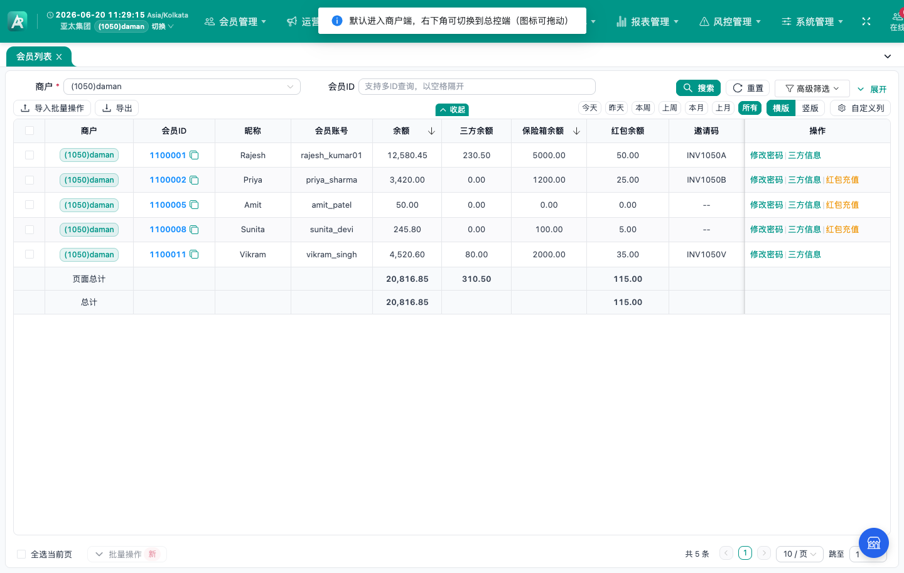
会员列表 · 增强 /member/user
会员全量档案与查询入口。
- 筛选商户(必填) · 会员ID(多ID空格) · 账号 · 会员状态 · 注册时间区间；高级区：代理ID/注册IP/登录IP/邀请码/备注 · 渠道/注册设备/登录设备/代理状态/VIP等级/会员分组/活跃时间 · 黑名单/活动黑名单/注册指纹。
- 列商户 · 会员ID(可复制·点击下钻详情) · 昵称 · 账号 · 余额/三方/安全/红包 · 邀请码 · 渠道号 · 注册域名/设备号/浏览器指纹「新」 · 注册IP(可下钻) · 上次登录端/设备号/指纹「新」 · 投注额 · 分组 · 类型 · 黑名单(Tag) · 会员状态(Tag) · 在线(Tag) · 首充代理/佣金模式「新」 · 充值次数/金额 · VIP等级 · 备注(红字)；含本页/总计合计行。
- 工具栏批量导入 · 导出 · 批量操作下拉(未勾选置灰)：拉黑/洗白/禁用/启用/分组/加标签/转渠道/删备注/重置谷歌。
- 行操作修改密码(常驻·主色) · 三方信息(常驻·蓝) · 红包充值(条件出现：仅「代理模式=盈亏返利」会员·橙) · 后台谷歌重置(条件出现：仅「后台谷歌已绑定」会员·红)；竖线「|」分隔、整行不换行。
- 操作① 改密码：点「修改密码」→弹窗(新密码≥6)→保存，Toast「已重置」；② 三方信息：点「三方信息」→弹窗(FireBase Token / 极光 Token)→保存；③ 红包充值：仅盈亏返利会员显示，点→弹窗(充值金额>0)→确认发放；④ 后台谷歌重置：仅已绑会员显示，点→谷歌验证弹窗(密钥/二维码 + 6位验证码)→确认；⑤ 返佣开关：点「领取返佣」「对上级返佣」列开关→二次确认→切换+Toast(失败回弹)；⑥ 批量：勾选会员→批量操作下拉→拉黑/洗白/禁用/启用(二次确认)、分组/转渠道/加标签(参数弹窗)、删备注/重置谷歌；⑦ 批量导入：点「批量导入」→弹窗(下载模板→上传Excel→校验列→一键操作)；⑧ 导出：点「导出」→生成CSV(原型为占位提示)。
- 表单修改密码弹窗(新密码≥6) · 三方信息弹窗(FireBase/极光 Token) · 红包充值弹窗(充值金额>0) · 谷歌验证弹窗(扫码/密钥 + 输入6位验证码) · 批量分组/转渠道/加标签参数弹窗 · 批量导入弹窗(下载模板 + 上传 Excel + 校验列 + 一键操作)。
- 特殊领取返佣 / 对上级返佣「新」两开关切换均弹二次确认；批量状态类走二确、需参数类走参数弹窗；接受外部 query 下钻预填(IP/设备)。
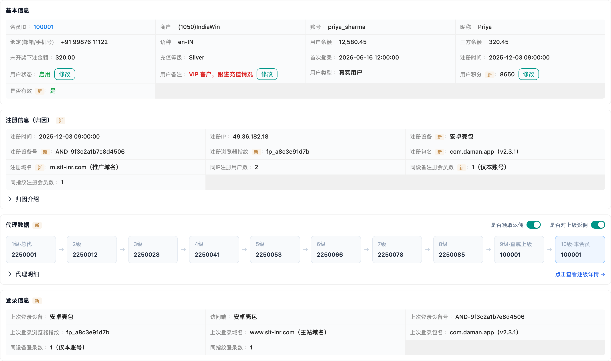
会员详情 · 增强 /member/user → 详情弹窗
弹窗内 6 个 Tab；首个「基本信息」为单页滚动多面板，注册信息（归因）置顶、红字按位置注入（截图即该 Tab）。
- 顶部会员ID 输入(回车查) · 日期区间(按商户时区) · 「查询」；多会员历史标签条(可切换/关闭，≤10)。
- Tab基本信息 / 充提信息 / 投注统计 / 钱包 / 资金记录 / 操作日志（懒加载）。
- 基本信息面板基础信息(会员状态「编辑」→单选弹窗 · 备注「编辑」→textarea弹窗) · 注册信息·归因「新」(设备/设备号/指纹/包名/域名/推广三方/同X注册数) · 数据统计(今日/累计 充值·提现·投注·输赢·优惠) · 活动彩金 · 代理数据「新」(头部 领取返佣/对上级返佣 两开关 + 10级代理关系链可点 + 代理明细展开) · VIP · 安全箱 · 投注洗码(投注额「编辑」) · 登录信息「新」(访问端/末次登录端/设备号/指纹/域名/包名 + 同IP/同设备/同指纹登录数) · 最后3次登录。
- 编辑(页内弹窗)会员状态(单选) · 备注(textarea) · 打码量(数字) · 用户积分(数字·真实回写)已增强；代理线逐级详情表格。
- 特殊返佣类开关切换二次确认；所有 同IP/同设备/同指纹 数值点击 → 跳风控对应维度页签并带入该会员；最后3次登录表头「同IP合计 N 人」可下钻。
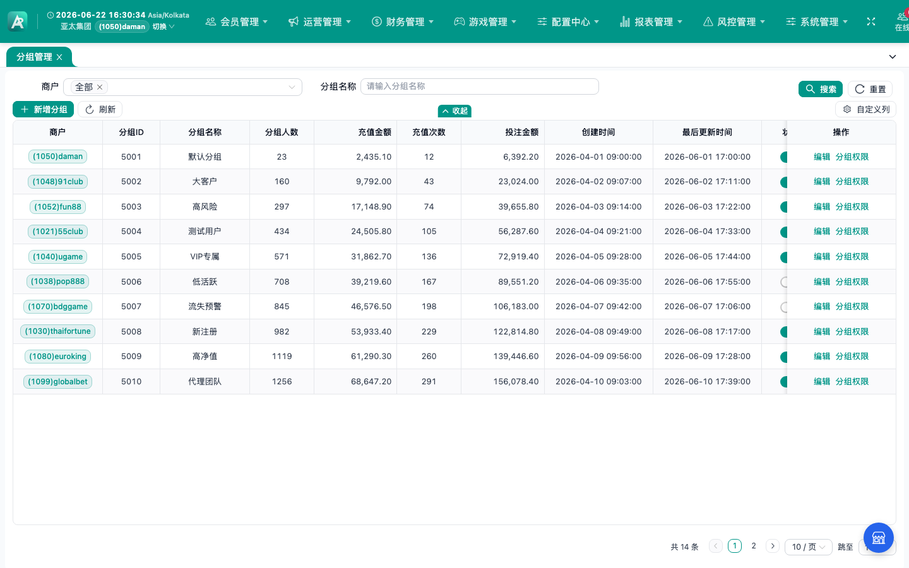
分组管理 新 /member/groupManage
会员分类管理（分组+表单融合一页）。
- 筛选分组名称 · 所属商户。
- 列分组ID · 商户 · 分组名称 · 会员数 · 充值金额 · 充值次数 · 投注额 · 创建/更新时间 · 状态(行内开关 1/0，直接切换、无二次确认)。
- 工具栏新增 · 刷新。
- 行操作 新编辑 ｜ 分组权限 ｜ 数据显示配置——参考会员列表操作列：文字链接、「|」分界线、三色区分（编辑=主色 / 分组权限=蓝 / 数据显示配置=橙·新）。
- 表单(弹窗)分组名称(必填) · 分组类型(默认分组/黑名单/代理分组/自定义分组；仅「自定义分组」可填分组名称，其余名称自动取类型名) · 充值金额≥ · 充值次数≥ · 投注额≥ · 备注。
- 分组权限(弹窗) 新改为弹窗呈现：勾选该分组可访问的权限项；权限项 18 项 按「账变记录 / 团队推广 / 佣金返佣 / 资金账务」4 类分区（每类主题色竖条标题 + 两列网格勾选）；已移除原「数据显示限制」项（迁出为下方独立「数据显示配置」）。
- 分组权限·交互规则 新① 勾选 / 取消即时反映到该分组；② 顶部支持 全选 / 清空；原「批量隐藏」里配置的内容已融合进本「分组权限」统一在此勾选管理（不再有独立的「批量隐藏」按钮 / 入口）；③ 系统分组只读：默认分组=权限全开、黑名单=权限全关，弹窗置灰不可改、底部只留「关闭」，仅「自定义 / 代理分组」可编辑；④ 保存走只读预览二次确认后生效，成功 Toast。
- 数据显示配置(弹窗) 新迁移自旧后台「配置管理 · 数据显示管理」，按会员分组各一套。弹窗内两张可收起 / 展开的表：①显示天数设置（交易记录 / 下注记录 / 充值记录 / 提现记录 / 团队报表 / 佣金明细 / 返佣金额 / 比赛记录）行内数字框设天数；②数据隐藏（昨日团队 / 昨日佣金 / 邀请奖励 / 新增下级月记录 / 游戏统计 / VIP数据 / 删除全部数据 / 推广数据）显示·隐藏开关。行内编辑 → 底部「保存」弹二次确认窗预览全部配置 → 「取消 / 发布」，点「发布」才生效。
- 本次改动 新① 操作列对齐会员列表（分界线 + 分色）；② 分组权限抽屉 → 弹窗；③ 新增「数据显示配置」弹窗（两表可折叠 + 保存预览 / 发布两段式生效）。
- 本次改动 新①(2026-06-27) 分组类型枚举由「手动/自动」改为「默认分组/黑名单/代理分组/自定义分组」四类，列表新增分色「分组类型」列；分组权限弹窗权限项扩为 18 项（融合自原「批量隐藏」配置的内容）、按「账变记录 / 团队推广 / 佣金返佣 / 资金账务」4 类分区渲染。②(2026-06-29) 顶部新增「类型聚合卡」（默认 / 黑名单 / 代理 三张卡，每卡聚合多商户 + 人数 / 充值金额 / 充值次数 / 有效投注流水）；下方表格只保留「自定义分组」；分组改为「一个分组可归属多商户」（商户由单选 → 多选必填）；系统分组（默认 / 黑名单）的配置 / 权限弹窗只读置灰、底部只留「关闭」；代理卡专属操作 = 编辑 / 分组权限 / 数据配置 / 新增商户。（2026-06-27/29）
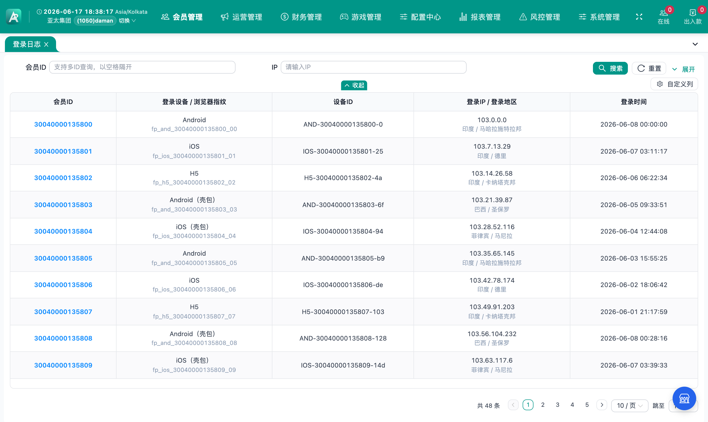
登录日志 新 /member/loginLog
查谁、用什么设备登过（纯查询）。
- 筛选会员ID · IP · 设备号 · 指纹 · 时间区间。
- 列会员ID(下钻详情) · 登录设备/指纹(合并双行：设备名+灰色指纹) · 设备号 · 登录IP/地区(合并双行) · 登录时间。
- 行操作无（纯查询页）。
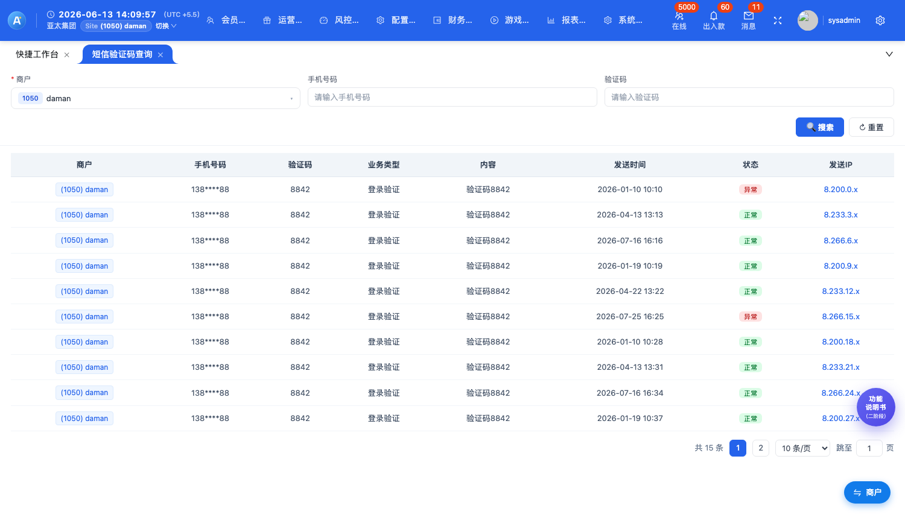
短信验证码查询 新 /member/smsCode
按手机号/验证码查记录。
- 筛选手机号 · 验证码。
- 列手机号 · 验证码 · 业务类型(登录/注册/绑定手机/重置密码) · 内容 · 发送时间 · 失效时间「新」 · 状态(成功/失败 Tag) · 发送IP · 三方信息「新」(通道名 + 三方流水号)；联系方式列加「手机 / 邮箱」Tag 前缀「新」。
- 特殊无工具栏、无导出、无行操作。
2 · 运营管理
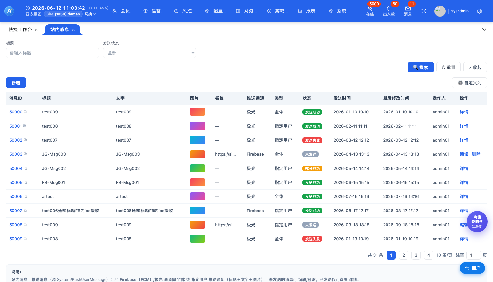
站内消息 新 多语言增强 /operations/inboxMessage
站内信 / 推送（标题+内容逐语言维护，多商户）。3 个子页签，下方逐 Tab 介绍（点「试用此页签」直达对应 Tab）。
- 操作① 新增(弹窗/滚动两页签一致)：点「新增」→弹窗(商户必选·编辑锁定 / 多语言标题·内容 / 排序≥0 / 状态开关)→「确定」校验默认语言标题+内容必填(空则红框+Toast)→保存；② 编辑：行「编辑」→同弹窗(商户禁改·切商户按该商户启用语言集重建语言块)；③ 删除：行「删除」→二次确认；④ 推送页签：仅未发送行有「编辑/删除」(删除二次确认)，发送中/成功/失败行仅「详情」→只读详情弹窗(逐语言标题/文案/图片+渠道/接收人/发送状态/时间/操作人)。
- 配置弹窗/滚动消息流程：①选商户→按该商户「前台配置」启用语言集平铺语言块(默认语言常驻置顶高亮、其余可展开/收起)→②默认语言填标题(单行)+内容(多行)→③选填其余语言→④设排序(≥0，与商户并排一行)与状态开关(置于「支持语言」标题行右)→保存。推送消息流程：①选商户→逐语言横版卡牌(默认语言卡置首，每卡=标题+文案+图片)→②默认语言标题+文案必填、图片选填→③选渠道(Firebase/极光)、发送时间、接收人(全体/指定用户)→保存。注意事项：默认语言标题+内容(推送为标题+文案)为唯一必填(图片选填)；选「极光」才出现「极光推送设备(web/app 多选)」、选「指定用户」才出现「指定用户(多行用户ID)」；「通知名称/链接」label 随渠道变。
- 通用筛选商户 · 标题 · 状态(启用/禁用)。
- 通用·多语言（2026-06-25）表单标题/内容统一用 MultiLangFields：①默认语言区(蓝底常驻、必填红框、标「默认」)；②支持语言区(按该商户启用语言分面板、可展开/收起全部、每语言标「已填/未填」)；缺译前台回退默认语言。语言集 = 当前所选商户启用的语言。
Tab 1弹窗消息▶ 试用此页签 ↗
- 列商户/ID/标题(默认语言)/内容(默认语言，含 「更多」查全语言)/已配语言(已填X/共Y)/排序/添加时间/状态。
- 表单商户(单选·编辑锁定)与排序并排一行 · 标题/内容(逐语言) · 状态开关置于「支持语言」标题行右侧。
- 特殊商户单选驱动可填语言集；默认语言标题/内容留空保存被拦(红框)。
Tab 2滚动消息▶ 试用此页签 ↗
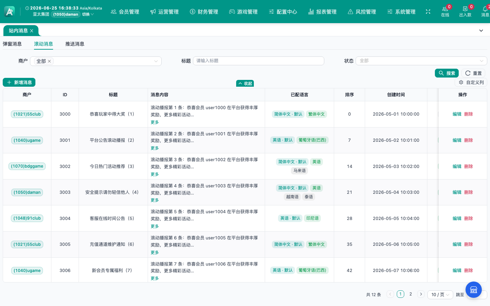
- 列同弹窗消息：商户/ID/标题(默认语言)/内容(含「更多」)/已配语言/排序/添加时间/状态。
- 表单同弹窗消息：商户(单选·编辑锁定)与排序并排一行 · 标题/内容(逐语言) · 状态开关置于「支持语言」标题行右侧。
- 特殊跑马灯滚动展示；多语言逻辑同弹窗。
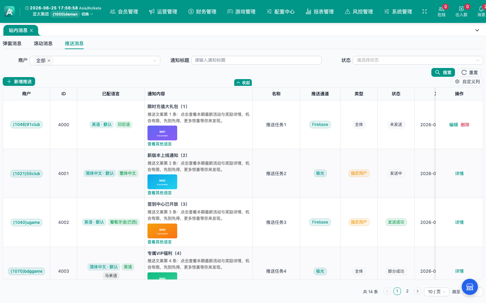
- 筛选商户 · 通知标题 · 状态(未发送/发送中/成功/部分成功/失败)。
- 列商户 / ID / 已配语言(第 3 列) / 通知内容（标题+文案+图片合并一列，默认语言展示 + 「查看其他语言」气泡看全部语言的标题/文案/图片） / 名称 / 推送通道(Firebase·极光) / 接收人(全体·指定) / 发送状态 / 发送·修改时间 / 操作人。
- 表单·逐语言横版卡牌弹窗加宽（默认露 2 个多卡片、可左右拖动）；多语言区做成横版卡牌：每种启用语言一张卡 = 语言名 + 通知标题 + 通知文案 + 图片（默认语言卡蓝底·标题/文案必填，其它语言选填、图片逐语言选填、缺译/缺图回退默认语言；图片链接输入框置于图片下方）。
- 表单·推送参数(2 列网格)推送通道(Firebase/极光) · 极光端(联动：选极光才显，WEB/APP复选) · 名称/链接(按通道变 label 与显隐) · 发送时间 · 类型(全体/指定用户) · 用户ID(联动：选「指定用户」才显)。
- 行操作未发送→编辑+删除；已发送→只读详情(详情按语言列出 标题/文案/图片)。
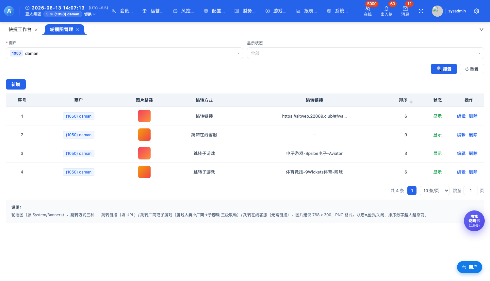
轮播图管理 新 多语言配图（2026-06-25） /operations/banner
App 首页轮播大图（逐语言一张图，多商户；已去掉「商城轮播」子 Tab，仅系统轮播单表）。
- 操作① 新增：点「新增轮播图」→弹窗(商户·各语言轮播图·跳转方式·跳转链接/游戏大类·厂商·子游戏·排序·状态)→「确定」保存；② 编辑：行「编辑」→同弹窗回填(商户锁定，子游戏跳转预加载级联回显)；③ 删除：行「删除」→二次确认；④ 看各语言图：「轮播图」列缩略图悬停放大，多语言点「更多」气泡逐语言看图(默认语言标「默认」、未配图显「—」)。
- 配置流程：①选「商户」(驱动可配语言集)→②配「轮播图」(默认语言图常驻必填，支持语言图按语言折叠展开/收起，已配标「已配」未配标「未配」)→③选「跳转方式」并按方式补字段→④填排序(≥0)、状态开关→⑤确定。跳转方式联动：跳转链接→显输入框；跳转子游戏→显「游戏大类→厂商→子游戏」三级级联(上级未选下级禁用、切上级清空下级)；在线客服→无额外字段。注意事项：商户、跳转方式必填；默认语言轮播图必填(缺失保存红框+提示「请上传默认语言轮播图」)；支持语言图选填、前台未配回退默认图；编辑态商户不可改。
- 筛选商户 · 显示状态 · 跳转方式（跳转链接 / 跳转子游戏 / 在线客服）「新」。
- 列商户/ID/轮播图(默认语言缩略图·点击放大·含「更多」查各语言)/已配语言/跳转方式(链接·子游戏·客服 Tag)/跳转链接/排序/状态。
- 多语言（配图）图片改为 MultiLangImageFields：①默认语言区(蓝底常驻、默认语言图必传、标「默认」)；②支持语言区(按商户启用语言分面板、可展开/收起、每语言标「已配/未配」)；各语言独立上传（无「应用到所有语言」），缺图前台回退默认语言图。
- 表单(跳转方式三选一联动)商户(单选·编辑锁定) · 逐语言配图(默认必传) · 跳转方式：①跳转链接→填 URL；②跳转子游戏→游戏大类(电子/真人/体育/棋牌)→厂商→子游戏 三级联动(上级切换清空下级)；③在线客服→无附加 · 排序 · 状态。
- 行操作编辑 · 删除(二确)。
- 本次改动 新(2026-06-27) 多语言图由「竖版 + 横版双版」合并为单张横版(768×300)；改为逐语言卡牌横向平铺，空白处可左右拖动滚动（在输入控件上不触发拖动）；默认语言卡置首 + 高亮 + 必填红框；编辑弹窗加宽至 760px。（2026-06-27）
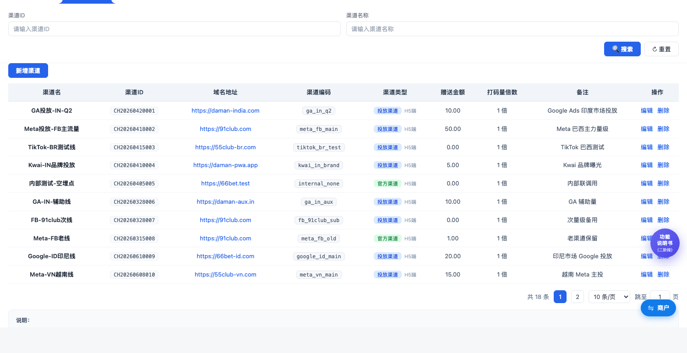
渠道管理 新 /operations/channelConfig
推广渠道配置 + 充提统计。
- 操作① 新增渠道：点「新增渠道」→弹窗(所属商户·渠道ID〔保存后自动生成/禁填〕·渠道名〔必填≤50〕·域名地址·渠道编码〔留空自动生成≤40·用于注册归因〕·渠道类型〔官方/推广〕·赠送金额〔≥0元〕·打码量倍数〔≥0倍〕·备注〔≤400〕·状态开关)→确定；② 批量设置赠送金额：勾选≥1行→「批量设置赠送金额(N)」→弹窗(赠送金额≥0必填·打码量倍数非负整数必填)→统一覆盖；③ 批量调整推广链接状态：勾选→「批量调整推广链接状态(N)」→选开启/关闭→二次确认(将 N 个渠道推广链接调为启用/禁用?)；④ 详情：行「详情」→基础信息弹窗(内可「复制」生成停用副本/「编辑」)；⑤ 编辑：行「编辑」→同新增弹窗(渠道ID禁改)；⑥ 删除：行「删除」→二次确认。
- 筛选渠道ID · 渠道名 · 时间范围(快捷)。
- 列(20列·统计)渠道编码 · 是否推广(Tag) · 渠道名 · 域名地址 · 总人数 · 首充人数/金额 · 赠送金额 · 二充人数/金额 · 总充值/总提现 · 今日 注册/首充/二充/充值/提现 · 备注。
- 工具栏新增渠道。
- 行操作编辑 · 删除(二确)。
- 表单渠道名(必填) · 域名地址(必填) · 渠道编码(数字·手填) · 赠送金额 · 打码量倍数 · 备注(≤400)。
- 特殊「批量设置赠送金额 / 批量调整推广接入」组件与文案已预留但未接线，当前页无批量按钮；无「渠道类型/分发端/编码自动生成」。
- 本次改动 新(2026-06-27) 渠道编码加 tooltip（编码规则说明）；商户 / 域名 / 渠道编码 / 渠道类型补必填校验。（2026-06-27）
待定页（3 项）· 域名管理 / 防封救援 / 解析检测记录 —— 方案未定稿、研发暂缓；默认收起，点击展开 / 收起
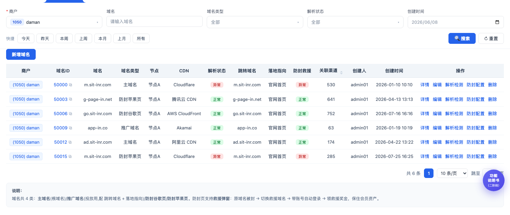
域名管理 待定 /operations/domainMgmt
推广/防封域名管理。
- 操作① 新增/编辑域名：点「新增域名」或行「编辑」→弹窗(商户·域名·域名类型·落地指向·节点·CDN·跳转域名·防封救援开关·状态开关·备注)→「确认」校验保存；② 详情：行「详情」→只读弹窗(底部可转「编辑」)；③ 解析检测：点「解析检测」仅提示「解析检测中…」(占位)；④ 防封配置：点「防封配置」→弹窗(见配置)；⑤ 防封救援(列开关)：点行内开关切换→立即保存提示，无二次确认；⑥ 删除：行「删除」→二次确认。
- 配置新增/编辑域名流程：①填商户+域名(须 https:// 开头·≤50字)+类型+节点+CDN+跳转域名+防封救援/状态开关+备注→②类型联动落地指向(选「防封谷歌页」落地指向只能「仿谷歌页」，选「主/推广域名」可选「官网首页/注册页」，切类型自动归位)→③确认。注意事项：域名必填且须 https:// 开头、≤50，否则红框「域名须以 https:// 开头」；保存前自动去首尾空格+去 # 字符；域名唯一性校验(新增全量判重·编辑排除自身)，重复报失败不保存。防封配置弹窗：①防封救援开关→②检测间隔(1~1440分钟)→③触发阈值(连续失败1~20次)→④跳转域名→⑤落地指向→确认；关闭防封救援时四项均置灰，仅开启时校验跳转域名(必填+https://)。
- 筛选商户 · 域名 · 域名类型(主/推广/防封谷歌页/防封苹果页) · 解析状态(生效/检测中/失效) · 创建时间。
- 列域名ID · 域名 · 类型(Tag) · 节点 · CDN · 解析状态(生效绿/检测中橙/失效红) · 跳转域名 · 落地指向 · 防封救援(行内开关) · 关联渠道 · 创建人/时间 · 备注 · 状态(行内开关)。
- 工具栏新增域名。
- 行操作编辑 · 解析检测(提示) · 防封配置(只读弹窗) · 删除(二确)。
- 表单域名(必填·须 https:// 开头·≤50·唯一性校验) · 备注。
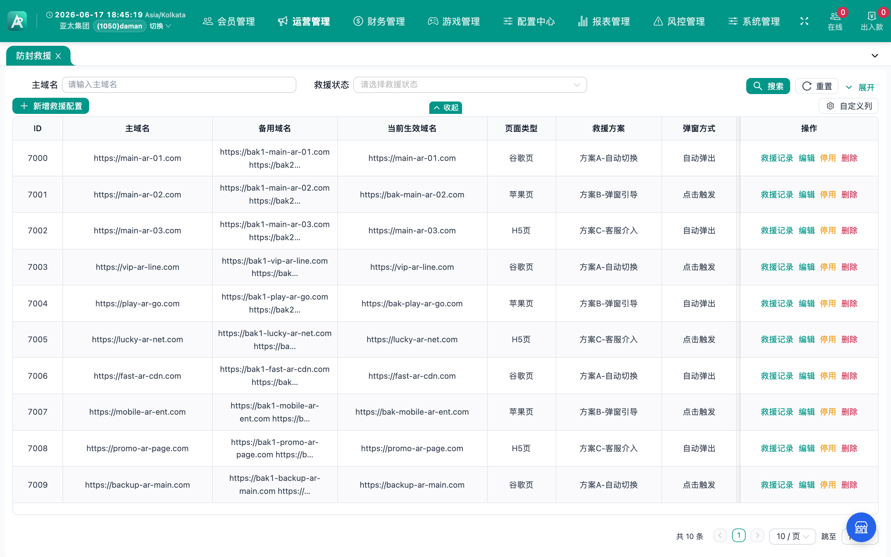
防封救援 待定 /operations/domainRescue
域名被封时的救援切换。
- 操作① 新增救援配置：点「新增救援配置」→弹窗(商户·主域名·备用域名·检测间隔(分钟)·自动救援开关·状态开关)→保存刷新；② 编辑：行「编辑」→同弹窗回显；③ 救援记录：行「救援记录」→只读弹窗(主域名/当前生效域名/救援方案/弹窗方式/救援奖金/累计救援人数/累计切换次数/最近切换时间)；④ 禁用：行「禁用」→二次确认；⑤ 删除：行「删除」→二次确认。
- 配置流程：①点「新增救援配置」→②选商户(可多选)→③填主域名(必填)→④填备用域名(多行文本·每行一个·构成备用域名池)→⑤设检测间隔(分钟·最小1·默认5)→⑥「自动救援」开关(默认开·域名异常时是否自动切备用)→⑦状态开关(默认启用)→⑧确认。注意事项：仅「主域名」必填校验，其余无内置校验；当前生效域名/累计切换次数/最近切换时间由系统按切换结果回填、非表单填写；本页无独立「触发阈值/手动切换」字段，自动救援以「自动救援」总开关+「检测间隔」体现。
- 筛选主域名 · 救援状态(正常/已切换) · 创建时间。
- 列ID · 主域名 · 备用域名 · 当前生效域名 · 页面类型(谷歌/苹果/H5页) · 救援方案 · 弹窗方式(自动/点击) · 救援奖金 · 累计救援人数 · 救援状态(Tag) · 累计切换次数 · 最近切换时间 · 状态(Tag)。
- 工具栏新增救援配置。
- 行操作救援记录(只读弹窗) · 编辑 · 停用(二确) · 删除(二确)。
- 表单主域名(必填) · 备用域名(textarea多行) · 检测间隔(分钟) · 自动救援(开关) · 状态(开关)。
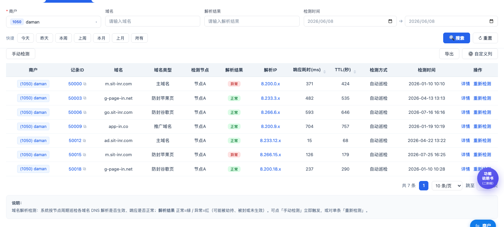
解析检测记录 待定 /operations/domainResolveLog
域名解析检测流水（只读日志）。
- 筛选域名 · 检测结果(成功/失败) · 执行时间。
- 列ID · 域名 · 域名类型(Tag) · 解析IP · 检测节点 · 检测方式(自动巡检/手动) · 检测结果(成功绿/失败红) · 响应时间(ms) · TTL(秒) · 执行时间。
- 工具栏手动检测(提示)。
- 行操作详情(只读弹窗) · 重新检测(提示)。
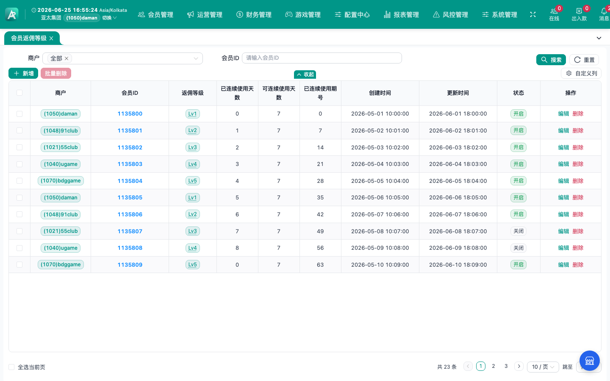
会员返佣等级 新 /operations/memberRebateLevel
把返佣等级偏低的会员强制提到指定等级。
- 操作① 新增等级：点「新增」→弹窗(商户单选·编辑锁定 + 会员ID必填 + 返佣模式〔固定返佣/动态返佣，置于返佣等级上方〕+ 返佣等级Lv1~Lv10 + 固定返佣才配「可连续使用天数1~30」)→确定；② 编辑：行「编辑」→同弹窗(会员ID禁改)；③ 删除：行「删除」→二次确认；④ 批量删除：勾选行→「批量删除(N)」→二次确认；⑤ 查看费率表：点「返佣等级」列虚线标签 Lv→只读费率表弹窗(860px)。
- 筛选会员ID。
- 列会员ID(蓝链下钻详情) · 返佣等级(Lv，可点→只读「等级费率表」弹窗) · 返佣模式(固定返佣=橙标/动态返佣=绿标) · 已连续使用天数 · 可连续使用天数 · 已连续使用期号(动态返佣这三列显示 -) · 状态(已用≥可用则禁用) · 添加/更新时间。
- 工具栏新增 · 批量删除(未选禁用·带数量)。
- 行操作编辑 · 删除(二确)。
- 表单商户(单选·编辑态置灰锁定) · 会员ID(编辑态禁用) · 返佣模式(固定返佣/动态返佣，置于返佣等级上方) · 返佣等级(Lv1~10)：选固定返佣才显示「可连续使用天数(1~30，默认7)」、选动态返佣无天数配置；切换模式时商户/会员ID/返佣等级保留不变(配置一样)；状态由系统按天数推导(表单无状态字段)。
- 本次改动 新(2026-06-27) 固定返佣的「可连续使用天数」改为「生效日期区间」日期选择器（必填红框）；列表删除「可连续使用天数 / 已连续使用期号」两列，合并为「生效日期区间」列。（2026-06-27）
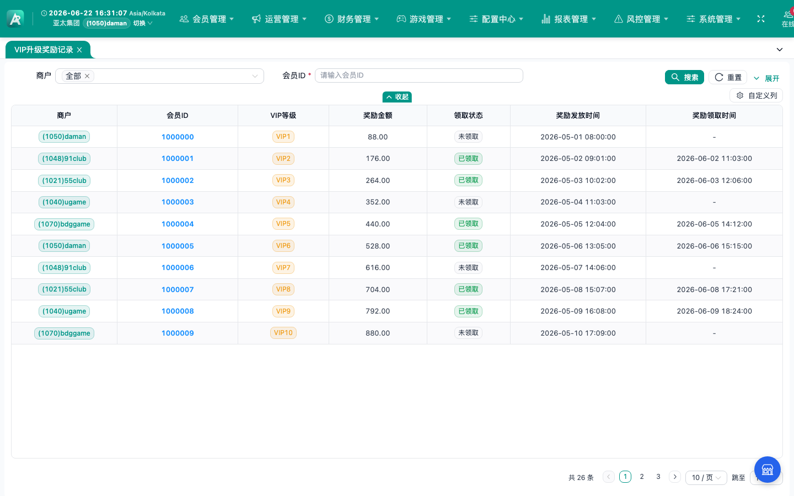
VIP升级奖励记录 新 /operations/vipRewardLog
VIP 升级奖励发放/领取记录（只看数）。
- 筛选会员ID(必填) · VIP等级(VIP1~10) · 发放时间区间。
- 列会员ID(蓝链下钻) · VIP等级(Tag) · 奖励金额 · 领取状态(已领/未领 Tag) · 发放时间 · 领取时间。
- 工具栏导出(演示提示)。
- 行操作无操作列。
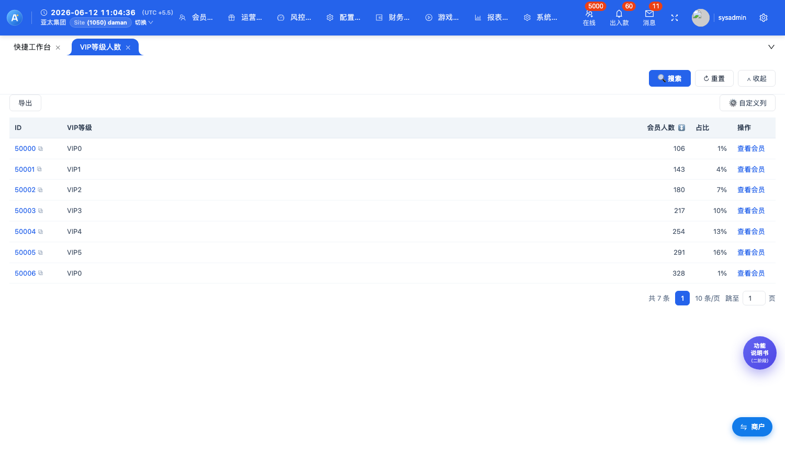
VIP人数 新 /operations/vipLevelCount
各 VIP 等级有多少人。
- 筛选无。
- 列等级ID · 等级名称(VIP0~9) · 人数(蓝链 → 跳
/member/user?vipLevel=下钻) · 占比(进度条 NProgress·inside 百分比)。 - 特殊无工具栏、无导出、无行操作。
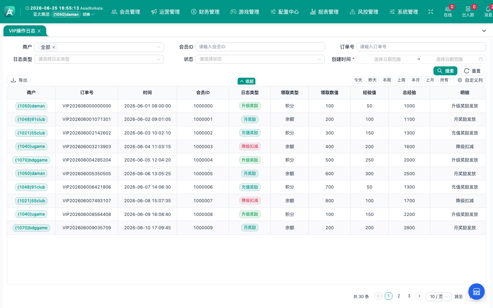
VIP操作日志 新 /operations/vipOpLog
VIP 经验操作流水明细。
- 筛选会员ID · 订单号 · 日志类型(升级/月奖励/充值/降级) · 状态(成功/失败) · 创建日期(必填)。
- 列订单号 · 时间 · 会员ID · 日志类型(Tag) · 领取类型(积分/余额) · 领取数值 · 经验值 · 总经验 · 明细 · 状态(Tag)。
- 工具栏导出(演示提示)。
- 行操作操作列新增「查看「新」」按钮。
- 本次改动 新(2026-06-29) 操作列新增「查看」按钮 + 详情弹窗（商户 / 单号 / 时间 / 会员ID / 日志类型 / 领取类型 / 经验 / 明细 / 状态 全字段只读展示）。（2026-06-29）
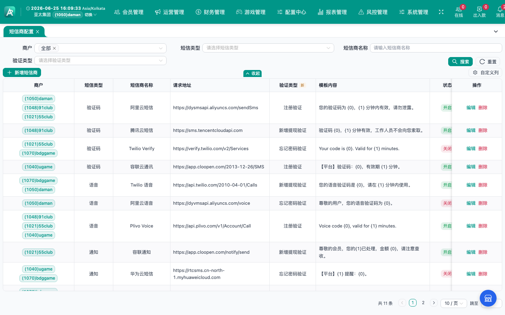
短信供应商配置 新 单表融合（2026-06-25） /operations/smsConfig
短信通道商配置（多商户）；原「验证码 / 语音 / 通知」3 Tab 融合为单列表，新增用「短信类型」下拉区分。
- 操作① 新增：点「新增」→弹窗(商户多选必选 + 名称必填 + 短信类型〔下拉·当前仅「验证码」〕必选 + 接口地址必填 + 验证类型〔注册/提现/找回密码〕必选 + 模板内容〔可插占位变量〕 + 状态开关)→「保存」(校验失败红框标错)；② 编辑：行「编辑」→同弹窗(ApiKey/密码留空=不修改)；③ 删除：行「删除」→二次确认。
- 筛选商户 · 短信类型(验证码/语音/通知) · 名称 · 验证类型。
- 列商户 · 短信类型(验证码·语音·通知 Tag) · 名称 · URL · 验证类型(注册/新增提现/忘记密码) · 模板(截断+悬停看全文) · 状态。
- 表单商户(多选·必填) · 短信类型(下拉：验证码/语音/通知) · 名称 · URL · 验证类型(下拉：注册验证/新增提现验证/忘记密码验证) · 模板(textarea) · 状态开关。
- 行操作编辑 · 删除(二确) · 测试发送(演示提示)。
- 特殊标题由「短信配置」更名「短信商配置」；ApiKey 列表脱敏；密码/ApiKey 留空 = 不修改。
- 本次改动 新(2026-06-27) 卡片更名为「短信供应商配置」；新增「短信供应商」下拉（必填 · 前置于名称 · 联动默认名称 · 编辑禁用）+ 列表查询；列表精简为「商户 / 名称 / 验证码 / 模板内容」4 列；字段改名 账户→API KEY、API接口→API地址、三方商户号→API商户号，API 密钥编辑脱敏回显；删除「短信类型」表单项（固定为验证码）/ 顶部提示条 / 行内删除；模板内容改必填。（2026-06-27）
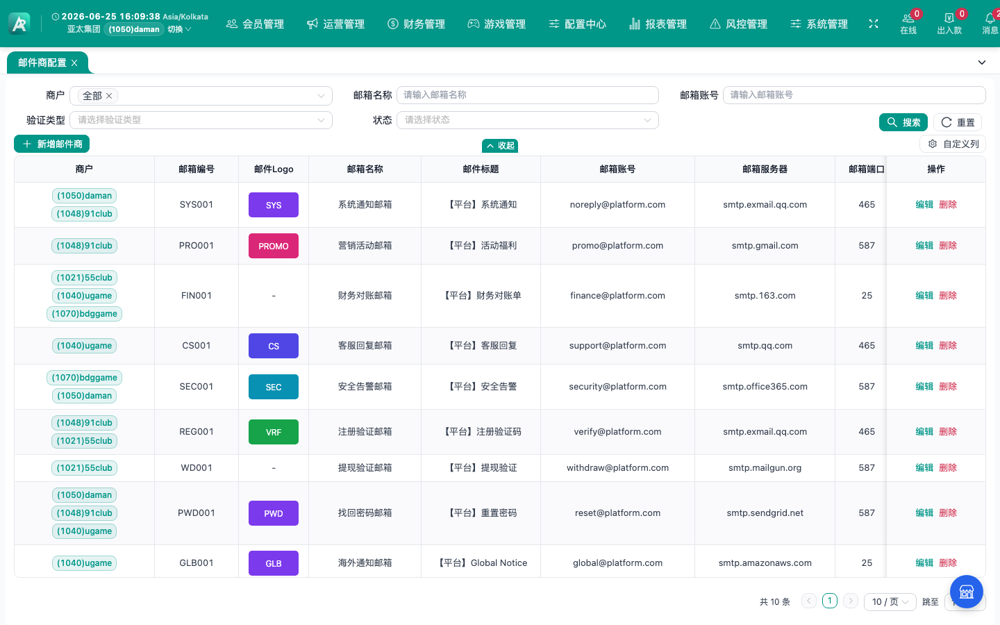
邮件供应商配置 新 字段对齐源站（2026-06-25） /operations/emailConfig
邮件通道商配置（多商户）；字段对齐源站、新增「邮箱编号」。
- 操作① 新增：点「新增」→弹窗(920px两列；商户多选必选 + 验证类型〔注册/提现/找回密码〕必填 + 邮箱编号/Logo/名称/邮件标题 必填 + 邮箱账号必填 + 密码+确认密码〔须一致〕 + 状态开关 + 邮箱服务器/邮箱端口1~65535 必填 + 备注)→「保存」(校验失败红框，含确认密码不一致)；② 编辑：行「编辑」→同弹窗(密码留空=不修改)；③ 删除：行「删除」→二次确认。
- 筛选商户 · 邮件名称 · 发件箱账号 · 验证类型 · 状态。
- 列商户 · 邮箱编号 · 邮件Logo(缩略图+悬停放大) · 邮件名称 · 邮件标题 · 发件箱账号 · 邮箱服务器(SMTP) · 邮箱端口 · 验证类型 · 状态 · 备注。
- 表单商户(多选·必填) · 验证类型(必填) · 邮箱编号(必填) · 邮件Logo(必填) · 邮件名称(必填) · 邮件标题(必填) · 发件箱账号(必填) · 邮箱密码(新增必填/编辑留空不改) · 确认密码 · 状态 · 邮箱服务器(必填) · 邮箱端口(1–65535·必填) · 备注。
- 行操作编辑 · 删除(二确) · 测试发送(演示提示)。
- 特殊标题由「邮件配置」更名「邮件商配置」；字段更名：发件账号→邮箱账号、SMTP服务器→邮箱服务器、端口→邮箱端口；密码不回填、两次输入须一致。
- 本次改动 新(2026-06-27) 卡片更名为「邮件供应商配置」；新增「邮件供应商」下拉（必填 · 前置 · 联动名称）+ 查询；新增「邮箱密码」必填（脱敏）；状态改为开关；列表精简为「商户 / 名称 / 供应商 / Logo / 邮件内容 / 备注」，新增「邮件内容」只读多行列；删除行内删除；字段「三方商户号→API商户号」。（2026-06-27）
3 · 报表管理

数据追踪与推送（渠道预警）新 /report/channelAlert
渠道预警页的纸飞机（Telegram）数据追踪与推送配置。
- 工具栏新增「数据追踪与推送」按钮 → 打开表格化配置弹窗。
- 配置(弹窗)顶部主开关「充值通道纸飞机推送」；下分三组：①TG机器人（推送间隔 5–1440 分 / Token / 群组 Id）；②渠道预警（充值成功率 · 拉单失败阈值）；③金额预警（商户余额预警阈值等）。主开关关闭则下方所有项置灰不可编辑；保存时数值校验红框定位出错项。
- 本次改动 新(2026-06-27) 该组配置从配置页「开关参数配置」迁入本页（系统参数同步删除「New Upi 绑定数 / DSP 流量平台」，「预警监控 + TG机器人」整组迁出到此）。（2026-06-27）
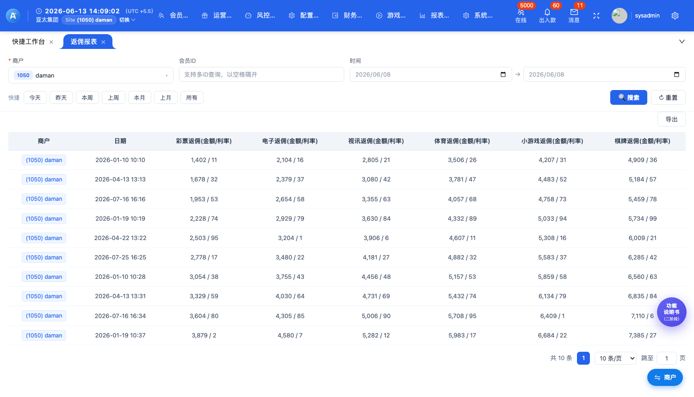
代理报表 新 已增强 /report/agentReport
按代理维度汇总团队业绩。
- 筛选统计周期(日/日区间/月/所有，切换真实刷新——金额按 ×1/×7/×30/×120 缩放、日期口径随变) · 代理ID。
- 列代理ID · 代理账号 · 下级数 · 充值 · 提现 · 投注 · 返佣 · 平台盈亏(正绿负红) · 日期。
- 工具栏导出。
- 行操作下级列表 → 右侧下钻抽屉(宽660·标题含父代理ID·只读表：下级代理ID/账号/下级数/充值/投注/返佣/日期)。
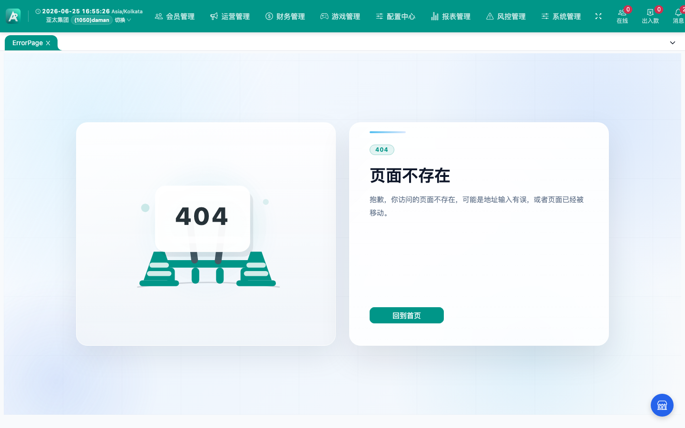
昨日返佣等级 新 /operations/rebateLevelYesterday
昨日各会员返佣等级与团队数据。
- 筛选会员ID · 返佣等级(Lv1~6) · 最小团队人数。
- 列日期 · 会员ID · 返佣等级(Lv) · 团队人数 · 团队充值 · 游戏量 · 计算返佣 · 实发返佣 · 发放时间。
- 分组表头彩票/电子/视讯/体育/棋牌 5 个游戏品类各为父表头横跨「有效投注流水 + 返佣金额」两个子列（两行分组合并表头，对齐源站）。
- 工具栏导出。
- 行操作无。
返佣报表 新 /report/rebateReport
返佣多维报表，三 Tab：流水返佣 / 返佣报表 / 层级返佣报表（截图待补，原型可点击）。
- Tab流水返佣（会员ID/手机号脱敏 + 五游戏 + 可得佣金）/ 返佣报表（按日 + 五游戏）/ 层级返佣报表（相对层级 + 充值人数/金额 + 五游戏）。
- 筛选商户（多选 + 全部）· 日期区间 / 相对层级（按 Tab）· 会员ID / 手机号。
- 列五游戏＝彩票 / 电子 / 视讯 / 体育 / 棋牌；均含「页面总计 / 总计」双行合计。
- 工具栏导出（真实下载 CSV）· 自定义列。
- 特殊手机号脱敏；页脚合计随筛选刷新；tenant 端。
4 · 风控管理 （↑提升为一级）
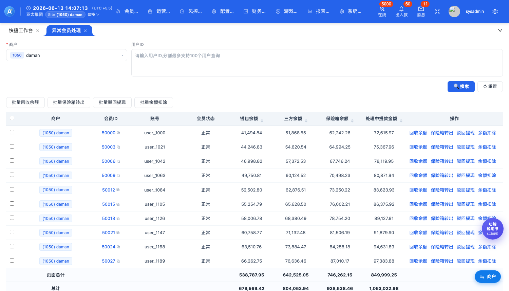
异常会员处理 新 /risk-control/abnormalMember
处置可疑会员、批量回收/驳回。
- 操作四项资金处置，单条(行操作)/批量(勾选→「批量操作」下拉)复用同一确认：① 回收余额、② 保险箱转出：点→二次确认(N 人)→处置；③ 驳回提现：点→弹窗(备注必填·禁中文)→二次确认；④ 余额扣除：点→弹窗(扣除金额须为负〔max -0.01〕 + 备注必填·禁中文)→二次确认；未勾选点批量提示「请先选择」。
- 筛选所属商户 · 会员ID · 账号 · 设备(安卓/iOS/PC/H5) · 会员状态 · 黑名单状态。
- 列商户 · 会员ID · 账号 · 会员状态(Tag) · 钱包/三方/保险箱余额 · 处理中提款金额 · VIP等级 · 上级ID · 黑名单(Tag) · 设备 · 投注·充值·提现(各「金额/笔数」合并列) · 注册时间。
- 工具栏(批量·未勾选禁用)回收余额 · 保险箱转出 · 驳回提现 · 余额扣除。
- 行操作同名四项(单条)。
- 特殊(处置确认弹窗)回收/转出仅二确；驳回提现需填备注(必填·不能含中文)；余额扣除需填金额(必须为负)+备注(同上)。
- 本次改动 新(2026-06-29) 设备枚举由 4 种扩为固定 7 种：H5 / PC / 安卓原生 / iOS原生 / 安卓壳包 / iOS壳包 / PWA。（2026-06-29）
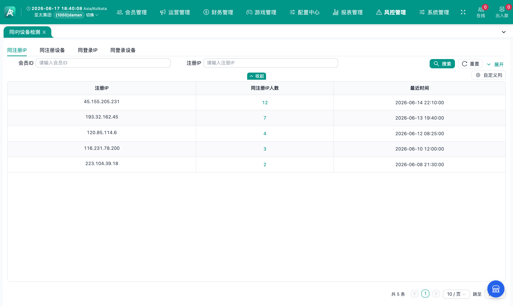
同IP/设备检测 新 /risk-control/sameIp
揪出一个 IP/设备注册一堆小号的工作室。
- 页签同注册IP · 同注册设备 · 同登录IP · 同登录设备（切换 reload）。
- 筛选(随页签)会员ID · 维度值(注册IP/注册设备/登录IP/登录设备) · 日期区间。
- 列维度值(IP 或设备指纹) · 人数(蓝链 → 跳
/member/user带当前维度=该值 下钻) · 最近时间。 - 特殊无工具栏/无导出/无行操作；4 页签共用同一聚合形状、数据源不同。
5 · 配置中心 （↑提升为一级）
配置项·快捷入口 侧栏（共用 ConfigSideNav）改 2026-06-26
VIP配置 / 返佣配置 / 消息模板配置 三页共用的左侧导航（页内快速切换配置项）；可展开/收起。搜索增强：既能搜页面入口，也能直接搜某个具体配置项名。
- 搜索框新 仅展开态：侧栏顶部「配置项·快捷入口」标题下方一个常驻搜索框（placeholder「搜索配置项…」、可清空）。
- 两类匹配①页面入口——按入口标题 / 描述 / 短名模糊匹配（不区分大小写、子串包含，对应三个配置页入口）；②跨页配置项名——可直接搜某个具体配置项（如「升级奖励」「洗码」「会员注册」），索引收录 VIP配置 19 项 + 返佣配置 17 项 + 消息模板 12 个推送场景，共 48 项。
- 结果样式每条结果带彩色标签：蓝色「页面」/ 紫色「配置项」；主标题=命中名，副标题=所属页名。
- 点结果点任意结果都跳转到其所属配置页（页面入口跳该页，配置项也跳其所属页）。
- 无命中显示「无匹配配置项」；清空恢复全部入口卡。
- 边界收起态（左侧短标签竖排）不受搜索影响、不显示搜索框。
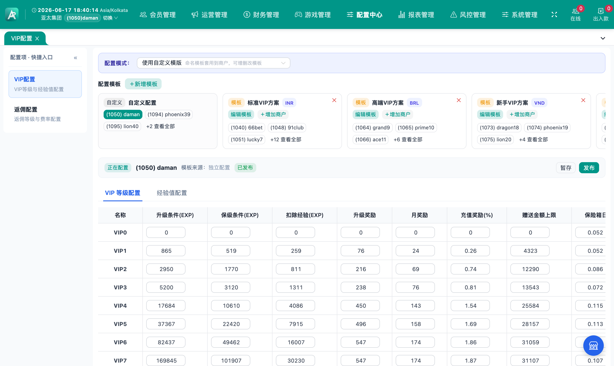
VIP配置 新 /config-center/vipConfig
VIP 等级与经验值规则（多商户/模板）。2 个子页签，下方逐子页签介绍。
- 操作① 切商户：点「正在配置」栏商户 select（或模板卡商户 chip / 「查看全部」弹窗搜索点选）→ 载入该商户配置；② 模板：「＋新增模板」→草稿横幅(模板名≤20+币种)→「保存模板」(保存前只读预览确认)；点模板名/「编辑」进编辑态(名直接输入框改·失焦/回车提交，空或重名回退)；卡右上「✕」删除→二次确认(仅删模板，用该模板的商户配置保留并转自定义)；③ 套用：模板卡「＋增加商户」→弹窗(多选目标商户)→套用；④ 复制：「使用商户模版」模式「以当前商户复制到其他商户」→弹窗(源预览+目标多选)→确认。
- 配置流程：① 顶部选配置模式(使用自定义模版/使用商户模版) → ② 子页签切「VIP等级配置 / 经验值配置」 → ③ 表内逐格行内编辑(常驻无弹窗)各数值(步长不同：洗码·充值奖励 0.01 / 其余 1) → ④ 「保存配置」(自定义模版走只读预览确认；模版套用模式分保存草稿/发布，发布走二次确认对外生效) → ⑤ 可复制到其他商户。注意事项：等级固定 VIP0–VIP10 共 11 级，不可增删、名称只读；删模板不影响商户既有配置(自动转自定义)；保存=草稿、发布才生效。
- 通用·配置模式三选一：使用自定义模板(模板画廊) / 使用商户模板 / 单商户配置；「正在配置」栏：商户 select + 来源 + 状态三态(未配置/待发布/已发布) + 保存 + 复制到其他商户。
- 通用·复制弹窗源配置预览 + 目标商户多选(全选/反选) + 覆盖警示(已配置实时计数) + 确认复制。
- 通用·特殊/边界行内编辑无弹窗；保存/发布前必弹只读预览确认；模板删除二确(转自定义)；复制跳过源自身；未点「确认保存」一律不落库。逻辑/边界全量见《研发说明》§4。
- 本次改动 新(2026-06-29) 等级表各数值列加保存上限校验红框——经验值(升级/保级/扣除) · 单次赠送金额上限 ≤99999999；升级奖励 · 月奖励 ≤9999999；充值奖励% · 5 项洗码率 ≤100；每日提现次数 · 月奖累计次数 ≤999；经验值兑换金额 ≤9999999。超限即时红框 + 悬停看错因，保存拦截并指名出错字段。（2026-06-29）
子页签 1VIP 等级配置 （实时原型内点顶部此子页签查看）
- 等级表(行内常驻可编辑)名称(固定左) · 升级/保级/扣除经验 · 升级/月/充值奖励 · 单次赠送金额上限 · 电子/真人/体育/彩票/棋牌洗码率 · 单日提款次数 · 月奖累计可领取次数 · 结算日（各数值列行内编辑、不同步长）。
- 边界等级固定 11 级 VIP0–VIP10 不可增删、名称只读；数值列步长分档（洗码·充值奖励 0.01 / 其余 1）。
子页签 2经验值配置 （实时原型内点顶部此子页签查看）
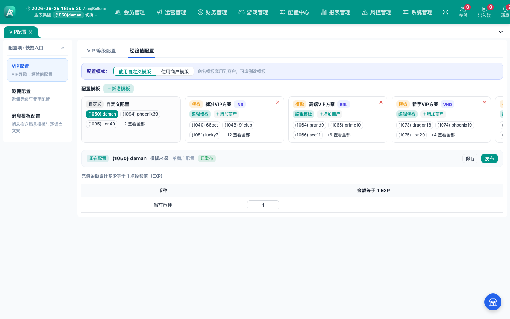
- 经验值表币种(只读) / 金额=1EXP（行内编辑）；描述文案展示「充值金额累计多少等于 1 点经验值(EXP)」换算说明。
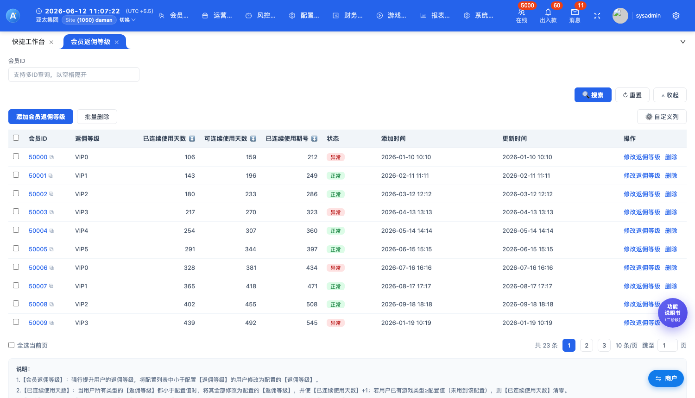
返佣配置 新 /config-center/rebateConfig
返佣等级与费率规则。2 个子页签，下方逐子页签介绍。
- 通用·配置模式同 VIP（三模式 + 模板画廊 + 复制弹窗 + 状态三态 + 保存/发布前只读预览确认）。
- 配置流程：① 顶部工作区选商户/模板 → ② 子页签1 设返佣等级(团队/直属晋升条件) → ③ 子页签2 逐格填「各级×各游戏」费率 → ④ 保存(出只读预览确认→存草稿) → ⑤ 发布(二次确认→对外生效) → 可「复制到其他商户」。注意事项：L0 基础等级不可改/删；费率同级合计 ≤5%(恰好5%通过，超限多游戏一起标红并指名、不保存)；删某等级会连带删该级费率矩阵；保存=草稿、发布才生效。
子页签 1返佣等级管理 （实时原型内点顶部此子页签查看）
- 等级管理(多级表头)等级 L{lv}；团队条件【充值人数/金额/游戏量 + 各满足人数】；直属条件【同上】；L0 基础等级不可编辑/删(灰字「基础」)。
- 行操作 / 工具栏编辑(行内) / 删除(二确，连带删该级费率矩阵)；新增等级(号=现有最大+1) · 说明；某行编辑中「新增等级」禁用。
子页签 2返佣费率配置 （实时原型内点顶部此子页签查看）
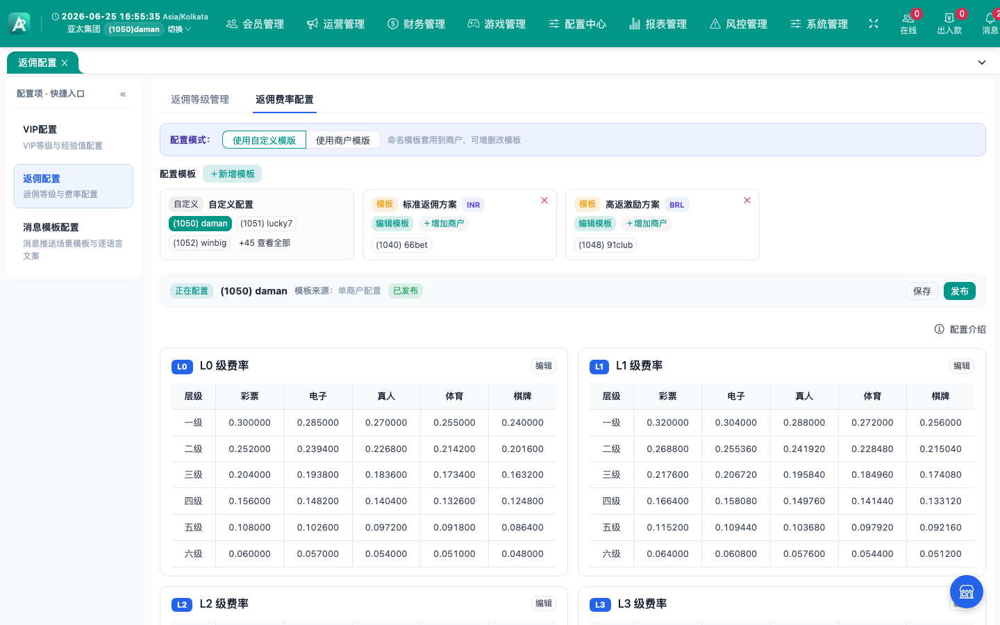
- 费率配置每等级一张卡：行=一~六级 × 列=彩票/电子/真人/体育/棋牌，逐格行内编辑(6 位小数)。
- 核心校验同级合计 ≤5%：保存时逐层级对 5 类求和，恰好 5% 通过（>5.000001 才拦）、多游戏越限一起标红并逐一指名、不保存。逻辑/边界全量见《研发说明》§4。
注册管理 新 /config-center/registerManage
注册相关配置（单页平铺、不分 Tab）；顶部商户切换条，按商户配置 + 保存/发布。
- 操作① 切商户：顶部切换条切换 → 重载该商户注册配置；② 可注册手机号：点「新增」加一张卡(区号+手机号长度)、卡内「✕」删除(横向卡片平铺可滚动)；③ 图形验证码预览：调「类型/位数」实时刷新示意图，点「换一个」重新生成。
- 配置流程：① 顶部切商户 → ② 逐板块设置(注册开关组〔开启注册+短信/手机/邮箱/图形验证码/邀请码/隐私默认勾选/游客登录〕· 注册限制〔同IP/同浏览器/同设备数〕· 注册赠送〔金额+打码倍数〕· 可注册手机号〔区号+各区号手机号长度〕· 图形验证码〔启用/类型〔数字·字母·算术·滑块〕/位数/有效期/错误上限/适用场景〕) → ③ 「保存」(弹保存预览列出注册开关/手机号个数/验证码类型 → 确认存草稿) → ④ 「发布」(二次确认 → 对外生效)。注意事项：手机号区号须 + 加 1~3 位数字(如 +91)否则红框+指名第几行；验证码启用时位数/有效期必填红框(算术/滑块无位数概念自动置灰跳过)；保存=草稿、发布才生效。
- 商户顶部 MerchantSwitchBar 切商户 → 加载该商户配置；右侧「保存 / 发布」。
- 板块注册开关（开启注册 + 短信/手机/邮箱/图形验证码/邀请码必填/隐私默认勾选/游客登录 + 关闭注册提示文案）· 注册限制（同IP/同指纹/同设备数）· 注册赠送（金额 + 打码倍数）· 可注册手机号（区号+长度卡片平铺、页内增删）· 图形验证码（启用/类型〔数字·字母·算术·滑块〕/位数/有效期/错误上限/适用场景 + 实时预览）。
- 校验可注册手机号区号格式红框；图形验证码启用时 位数·有效期 必填红框。
- 特殊关闭「开启注册」→ 展开前台关闭提示文案；全页单一保存统一校验。
- 本次改动 新(2026-06-29) 「当前国家区号」加格式校验（纯数字 · 不带 + 号 · ≤6 位），失败标红 + 红字提示 + 保存/发布拦截。（2026-06-29）
前台配置（语言配置）新 /config-center/languageConfig
前台 C 端展示配置（源站 H5Setting 全集）；顶部商户切换，按商户配置。
- 操作① 切商户：顶部切换条切换 → 重载该商户前台配置；② 品牌素材：每个 Logo/icon 位点击图片卡上传图片(本地预览·最多1张·可删)；③ 支持语言多选勾选、默认语言下拉单选。
- 配置流程：① 顶部切商户 → ② 设置三组(品牌素材〔站点名 + 主/头部 Logo/浏览器 icon 上传〕· 语言〔支持语言多选 + 默认语言〕· 展示〔货币符号 + 提现人姓名大小写〕) → ③ 「保存」(弹保存预览确认 → 存草稿) → ④ 「发布」(二次确认 → 对外生效)。注意事项：站点名必填、支持语言至少选 1 项、默认语言必选，缺则红框 + 提示；保存=草稿、发布才生效。
- 分组品牌素材（站点名 + Logo/Logo2/浏览器·APP icon，图片上传占位）· 语言（支持语言 15 种多选 + 默认语言限已选）· 展示（当前国家区号 + 货币符号 + 提现人姓名大小写）。
- 校验站点名必填红框；默认语言须 ∈ 支持语言（否则红框）。
系统参数配置 新 /config-center/sysParam
该页已从配置中心菜单隐藏（路由保留可直达），由融合页『开关参数配置』取代改 2026-06-26。商户级系统参数（数值/开关型）；顶部商户切换，按商户配置。
- 配置流程：① 顶部切商户 → ② 左侧分类锚点(可折叠)点选或滚动定位到目标分类(注册与登录安全·资金与绑定·汇率·营销与奖励·代理·预警监控，每组含子组) → ③ 逐项填数值/切开关 → ④ 每个分类卡标题栏各有一个「保存」(只校验+存该板块草稿) → ⑤ 顶部「发布」(全局·二次确认 → 对外生效)。注意事项：数值参数必填且须在各自 min/max 区间内，校验失败自动滚动到出错分类 + 标红出错项 + 指名「『X』填写有误」；保存=草稿、发布才生效。
- 保存改 取消顶部全局「保存」，顶部仅保留「发布」；改为每个分类卡各一个「保存」按钮，点击只校验并保存该板块草稿（红框仅标该板块出错项）；「发布」仍为全局（各板块存草稿后统一发布生效）。
- 绑定内容改 「资金与绑定 → 会员绑定」的「绑定内容」由单选下拉改为多选复选框（同板块「绑定触发条件」亦为多选）；选项不变：银行卡 / USDT / 电子钱包 / PIX，默认勾选 银行卡 + USDT。
- 二级导航左侧锚点联动，分 6 组：注册与登录安全 · 资金与绑定 · 汇率 · 营销与奖励 · 代理 · 预警监控（每组含子组）。
- 校验数值参数范围校验，失败红框 + 错误提示。
配置开关 新 /config-center/configSwitch
该页已从配置中心菜单隐藏（路由保留可直达），由融合页『开关参数配置』取代改 2026-06-26。商户级功能开关总览（双列开关网格）；顶部商户切换，按商户配置。
- 配置流程：① 顶部切商户 → ② 左侧分类锚点(可折叠)点选或滚动定位到 10 组开关(登录与安全·充值与支付·提现·活动奖励·财务积分·积分商城·彩票游戏·代理风控·推广链接·数据追踪)，卡牌可点标题展开/收起 → ③ 逐项拨开关 → ④ 每个分组卡卡头各有一个「保存」(只存该分组草稿；点保存不触发卡片折叠) → ⑤ 顶部「发布」(全局·二次确认 → 对外生效)。注意事项：纯开关、无字段校验；与注册管理的登录/注册类开关不重复；保存=草稿、发布才生效。
- 保存改 取消顶部全局「保存」，顶部仅保留「发布」；改为10 个分组卡各自卡头一个「保存」按钮，点击只保存该分组草稿、且不触发卡片折叠；「发布」仍为全局（各分组存草稿后统一发布生效）。
- 二级导航左侧锚点 10 组：登录与安全 · 充值与支付 · 提现 · 活动奖励 · 财务积分 · 积分商城 · 彩票游戏 · 代理风控 · 推广链接 · 数据追踪。
- 开关每项 = 开关 + 名称 + 说明；与注册管理的注册流程开关不重复（登录/安全类开关在此）。
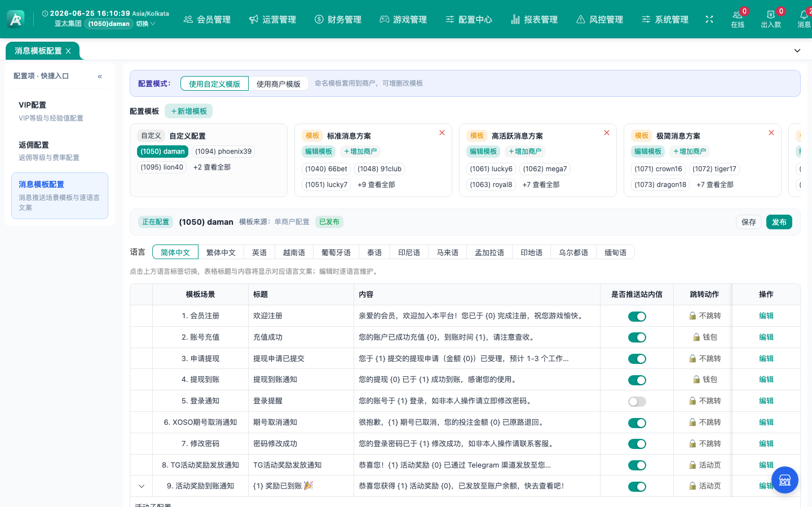
消息模板配置 新 迁入+增强（2026-06-25） /config-center/messageTemplate
12 业务场景的多语言通知模板（多商户/模板套用）。由运营管理迁入「配置中心·系统配置」，套用配置中心范式。
- 操作① 模板套用：「＋新增模板」→草稿横幅(模板名+币种)→保存(只读预览确认)；点模板名/「编辑」进编辑态、卡右上「✕」删除→二次确认(转自定义)；模板卡「＋增加商户」→弹窗多选目标套用；② 行内编辑：行「编辑」→ 标题(≤50)/内容(≤500)输入框、切上方语言即切到对应语言继续编辑(同行逐语言维护)→保存/取消(编辑中其它行禁用)；③ 行内开关「是否推送站内信」点切即存；④ 展开活动子配置：仅 #9 活动奖励到账 / #10 活动奖励待领取有展开箭头，展开后子表逐活动设「推送站内信」开关；⑤ 复制：「以当前商户复制到其他商户」→弹窗(源预览+目标多选)→确认。
- 配置流程：① 顶部选配置模式 + 切商户 → ② 顶部「语言」单选切到要维护的语言(12 种平铺) → ③ 表内对 12 场景逐行行内编辑当前语言的标题/内容、拨「是否推送站内信」 → ④ 「保存配置」(只读预览确认 → 存草稿；模版套用模式发布走二次确认) → ⑤ 可复制到其他商户。注意事项：默认语言(简体中文)标题/内容必填，留空保存被拦→自动切回简体中文 + 红框 + 指名缺「标题」还是「内容」，其它语言可留空(缺译回退默认)；跳转动作/推送样式按场景固定、只读带 🔒；保存=草稿、发布才生效。
- 配置模式二选一：使用自定义模版(模板画廊·新建/套用到商户) / 使用商户模版(以某商户为模板复制)；「正在配置」栏：商户 select + 来源 + 状态三态(未配置/待发布/已发布) + 保存配置 + 以当前商户复制到其他商户。
- 语言切换条顶部「语言」单选栏 12 种语言平铺：简体中文(默认)·繁体中文·英语·越南语·葡萄牙语·泰语·印尼语·马来语·孟加拉语·印地语·乌尔都语·缅甸语；切语言 → 表格标题/内容即显示该语言文案，编辑时逐语言维护。
- 模板表(12 场景)场景(编号+名) · 标题(当前语言·可换行左对齐) · 内容(当前语言·截断+悬停看全文) · 是否推送站内信(行内开关) · 跳转动作(🔒只读) · 推送样式(🔒只读) · 操作(编辑)。
- 本页行内编辑点「编辑」→ 当前语言的 标题(≤50·实时计数) / 内容(≤500·实时计数) 输入框，切上方「语言」即切到对应语言继续编辑（非弹窗、非整页跳转）；保存/取消。
- 活动子配置(展开行)仅 #9 活动奖励到账 / #10 活动奖励待领取 有展开箭头；子表：活动名(枚举值) · 触发时机 · 关联模板 · 推送站内信(开关) · 跳转动作(🔒) · 推送样式(🔒)。
- 批量批量开启 / 批量关闭(勾选模板)。
- 特殊跳转动作 / 推送样式 按场景固定、只读带 🔒（推送样式枚举：B1 顶部下滑横幅 / B2 顶部 Material toast / C3 高危警示 / C4 提现已退回）；保存配置前必弹只读预览确认；复制弹窗(源预览 + 目标商户多选 + 确认)。
- 边界默认语言(简体中文)标题/内容必填：留空保存被拦 → 自动切回简体中文 + 红框 + 指名缺「标题」还是「内容」；其它语言可留空(前台缺译回退默认语言)；已去掉原「状态(启用/禁用)」「验证类型」列。逻辑/字段全量见《研发说明》《字段词典》。
6 · 系统管理
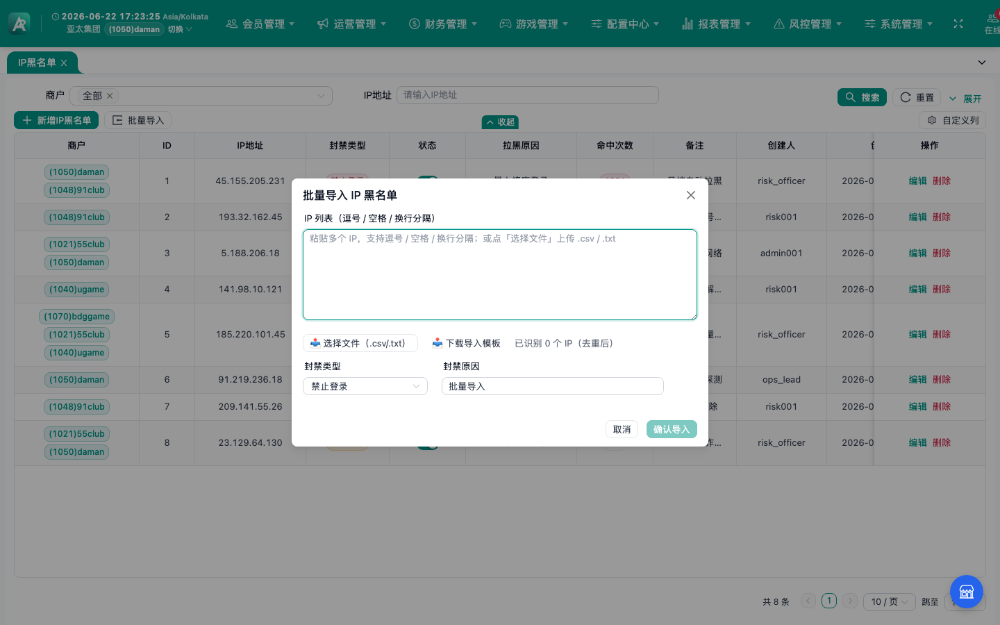
IP黑名单 新 已增强 /system/ipBlacklist
把恶意 IP 拉进黑名单（列表 + 两个弹窗：新增/编辑、批量导入）。
- 筛选IP地址 · 关键字 · 封禁类型(禁止登录/禁止注册) · 状态(生效中/已解除)。
- 列ID · IP · 封禁类型(注册warning/登录error Tag) · 状态(ConfirmSwitch 开关·二确·失败回滚) · 封禁原因 · 命中次数(>1000标红) · 备注 · 创建人/时间 · 最后修改人/时间。
- 工具栏新增IP黑名单（弹窗，原「新增黑名单IP」已改名 + 由页内展开改弹窗「新」） · 批量导入(弹窗)。
- 行操作编辑(IP 不可改，弹窗) · 删除。
- 新增/编辑弹窗IP地址(textarea·新增可多行) · 封禁类型 · 封禁原因(≤50) · 备注(≤100)；提交前 IPv4 逐项校验。
- 批量导入弹窗已增强IP列表 textarea + 选择文件(.csv/.txt) + 下载模板 + 实时「已识别 N 个(去重后，忽略 M 个无效)」 + 封禁类型 + 封禁原因(默认「批量导入」) + 确认导入(N)。
- 特殊批量解析：按 逗号/空格/换行/分号 拆 → IPv4 校验(每段0~255) → 去重 → 单次上限 500；确认后插入列表顶部 + Toast「成功导入 N 条」。
- 本次改动 新①(2026-06-27) 商户由多选改为单选必填；②(2026-06-29) 批量拉黑「封禁原因」加 50 字上限 + 字数计数。（2026-06-27/29）
6 · 系统管理 · 新增
系统角色 · 分配权限 新 /system/role
系统角色管理，重点是「分配权限」的权限树还原。
- 行操作「分配权限」→ 右侧权限树抽屉勾选。
- 本次改动 新(2026-06-29) 「分配权限」权限树由 3 模块占位重写为按真实路由还原的 10 大模块（会员管理 / 运营管理 / 财务 / 游戏管理 / 配置中心 / 报表管理 / 风控管理 / 系统管理 / 数据分析 / 商户管理）全量树，细到 查看 / 新增 / 编辑 / 删除 / 导出 / 审核 / 发布 / 处理 / 分配权限 等操作级权限叶子，标注总控 / 商户归属 + 危险操作二次确认 + 新节点带「新」标。（2026-06-29）